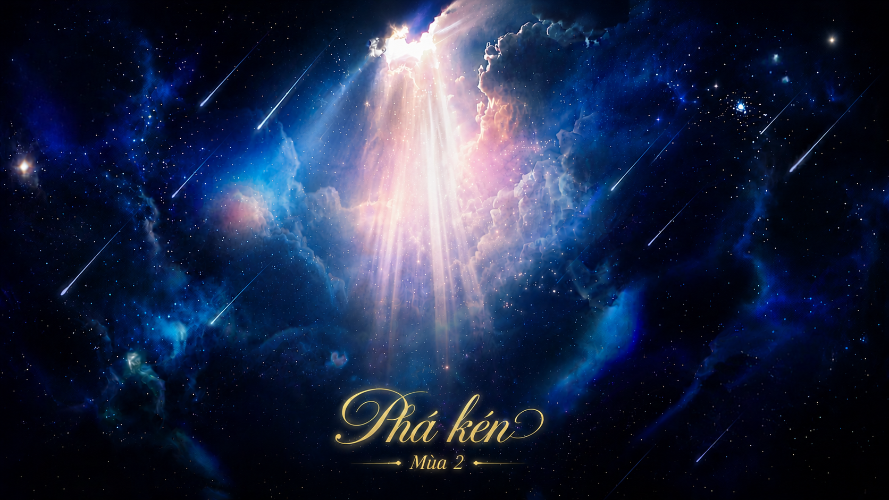

Tiếp nối hành trình của “Phá Kén – Mùa 1”, “Phá Kén – Mùa 2” được tạo ra như một không gian dành cho người trẻ đang loay hoay giữa những áp lực phải trở nên “rực rỡ” và nỗi sợ mình chưa đủ nổi bật.
Nếu mùa 1 là hành trình dám bước ra khỏi lớp kén của sự tự ti và e dè, thì mùa 2 là câu chuyện sau đó — khi người trẻ bắt đầu học cách chấp nhận bản thân, kiên nhẫn với nhịp đi riêng và tìm ra cách “tỏa” theo màu sắc của chính mình.
“Phá Kén – Mùa 2” không hướng đến việc tạo ra những phiên bản hoàn hảo, mà mong muốn mang đến cho sinh viên một không gian để trải nghiệm, dấn thân và sống thật với điều bản thân mong muốn.
Cuộc thi nghệ thuật kết hợp Showcase giải trí với đêm nhạc kịch truyền cảm hứng, mang đến những câu chuyện rất “đời” về tuổi trẻ, sự trưởng thành và hành trình đi tìm giá trị riêng của mỗi người.
Hành trình trải nghiệm giúp sinh viên kết nối với bạn bè, giảng viên và chính bản thân mình thông qua các hoạt động tập thể, sẻ chia và khám phá giới hạn cá nhân.
“Phá Kén – Chạm Tỏa” mong muốn lan tỏa tinh thần rằng mỗi người đều có một cách hiện diện riêng trong cuộc sống.
Không so sánh, không chạy theo khuôn mẫu, không ép bản thân phải giống bất kỳ ai — hãy cứ tỏa sáng theo chất riêng của mình.
Chỉ cần bạn vẫn không ngừng bước tiếp, bạn đã đang rực rỡ theo cách của chính mình.

Trở thành chuỗi dự án dành cho người trẻ với những trải nghiệm có chiều sâu cảm xúc, giúp sinh viên được kết nối, chữa lành và trưởng thành theo cách riêng.
Tạo nên không gian nơi người trẻ được lắng nghe, được trải nghiệm thật và có cơ hội dấn thân để khám phá phiên bản chân thật nhất của bản thân.
- Đồng hành cùng sinh viên trong hành trình trưởng thành và khám phá bản thân.
- Tạo ra môi trường kết nối chân thật giữa sinh viên, giảng viên và cộng đồng.
- Khuyến khích người trẻ dám trải nghiệm, dám thể hiện và sống đúng với màu sắc riêng của mình.
- Lan tỏa góc nhìn tích cực rằng: không cần trở nên hoàn hảo để được tỏa sáng.